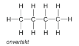
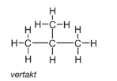

Koolwaterstoffen
Koolwaterstoffen zijn organische verbindingen van uitsluitend waterstof (H) en koolstof (C). Ze
worden vaak gewonnen uit aardolie, een bekende fossiele brandstof. Koolwaterstoffen kunnen verkeren in
verschillende fases, waaronder gas-, vloeibare en vaste fase. De meest bekende zijn methaan
(CH4),
propaan (C3H8) en butaan (C4H10).
Koolwaterstoffen kunnen vertakt of onvertakt zijn. Onvertakt betekent dat elk C-atoom
maximaal aan 2 andere C-atomen verbonden is. In een vertakt koolwaterstofmolecuul komt minstens
1 C-atoom voor dat met 3 of 4 andere C-atomen is verbonden. Isomeren zijn moleculen met dezelfde
molecuulformule, het verschil is de structuurformule. Een voorbeeld is C4H10, die
vertakt of onvertakt
kan zijn.


Alkanen, alkenen en alkynen
Alkanen zijn verzadigde koolwaterstoffen, ze bevatten dus alleen een enkelvoudige
atoombindingen
(C-C).
De algemene formule voor een alkaan is CnH2n+2. Hierbij is 'n' het
aantal
C-atomen. Alkanen zijn apolair, dit betekent dat ze niet oplossen in water, maar wel in andere
alkanen,
vetten of oliën.Alkenen zijn onverzadigde koolwaterstoffen met één tweevoudige binding tussen
twee C-atomen
(C=C).
Een voorbeeld is etheen (H2C=CH2), dit is een alkeen wat de rijping van fruit
bevordert. Een ander voorbeeld (structuur hieronder) is propeen, het kan als polymeer worden
gebruikt en
is vaak herkenbaar in plastic.
Alkenen hebben als algemene formule: CnH2n. Alkynen zijn
onverzadigde
koolwaterstoffen en hebben één drievoudige binding tussen C-atomen (C≡C). Een bekend alkyn is
ethyn (zie hieronder voor formule). Het wordt aangestoken als gas bij carbidschieten. Alkynen hebben
als algemene formule: CnH2n-2.